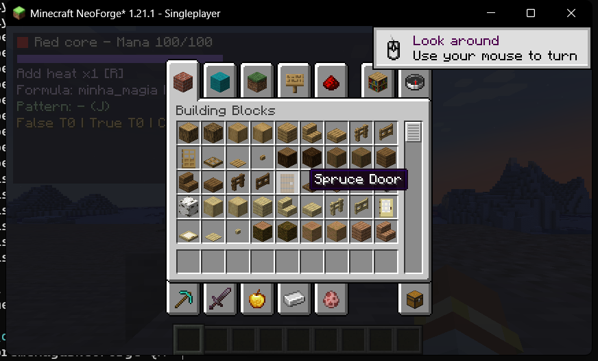

Gravamos uma sessão do Minecraft e apresentamos os resultados automatizados de Python, JUnit e NeoForge GameTests em um terminal. Cada linha aparece com um intervalo de aproximadamente 1 segundo para facilitar a leitura da gravação. Os testes foram executados na velocidade real. Também testamos caminhada, deslocamento lateral, pulo, inventário e alternância de câmera.
Transparência: GameTests identificados por método são mostrados depois que o servidor conclui o lote com 41 testes obrigatórios aprovados. Isso não cria um evento individual de execução por teste. FakePlayers não substituem dois jogadores com autenticação real, ainda pendentes.

Abertura real do inventário criativo após caminhada e movimento, em mundo exclusivamente de QA.